Country: POLAND
Time Range: 27.02.2020-18.04.2020
Period of Time: 52 days in total
Virus: SARS2 (SARS-CoV-2, 2019-nCoV)
Cumulative Statistics (overall)
CASES
Q: How much people were tested in Poland?
Q: How much people were infected comparing to tested in Poland?
Tests made (people tested at all) -- blue line
VS Detected infected (people positively tested) -- orange line
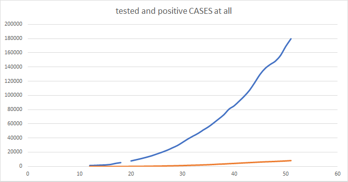
A: As you can see above there are three facts visible:
1) testing is increasing relatively quickly (comparing to infections)
2) tested positively (as infected) compose relatively slow upward trend
3) reaction of government looks promising (much faster testing than infection spread)
Q: How much people were infected in Poland?
Detected infected (people positively tested) -- orange line
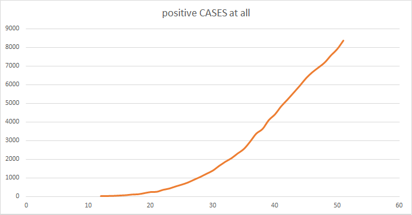
A: Still number of infected people is increasing quite fast:
before day 40 exponentially, after it more linear.
RATES
Q: How much people were infected of all tested in Poland?
Detected infected (people positively tested) -- blue line
OF Tests made (people tested at all)
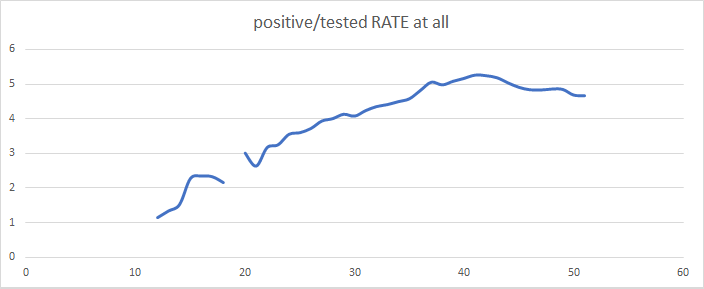
A: It is strongly visible in above diagram, that after day 42 a situation
of testing comparing to infections has changed to be better.
Q: How much people recovered of all infected in Poland?
Q: How much people dead of all infected in Poland?
Detected recovered (people previously infected but now healthy) -- grey line
VS Dead (people previously infected but now dead) -- yellow line
OF Detected infected (people positively tested)
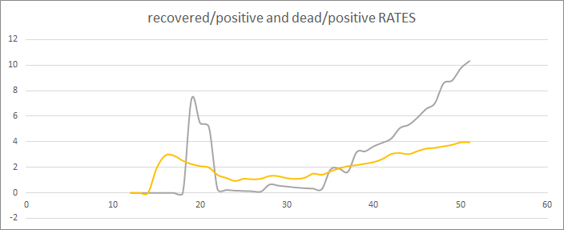
A: Firstly let's look on recoveries.
Around day 20 we can see that there was a mistake in the data officially took,
or it was time gap between cases recognized as recovered, especially as before/after were close to 0.
We can see also that after day 34 recovering started to increase in linear way (good sign).
A: Secondly let's look on dead cases.
Before day 14 there was no information published about dead case and after it, it quickly gone upward,
to go little downward soon, and later slowly gone up.
A: Both lines go upward now, but recovered cases more than two times faster than dead cases. Not bad, but could be better.
Daily Statistics (per day)
NEW CASES
Q: How much people are tested in Poland on daily basis?
Q: How much people are infected per day comparing to tested daily in Poland?
New tests made (people tested at all daily) -- blue line
VS Newly detected infected (people positively tested daily) -- orange line
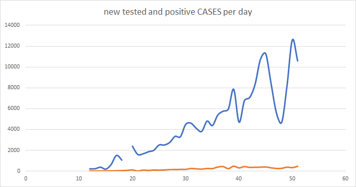
A: There is more-or-less upward trend of testing, but line jumps shows it is not stable since day 40.
It looks there are periods of time when there is a pressure to do more tests, but later it again goes downward.
A: On the other hand it looks that infections are relatively stable (more natural behavior).
Q: How much new people are infected in Poland every day?
Newly detected infected (people positively tested daily) -- orange line
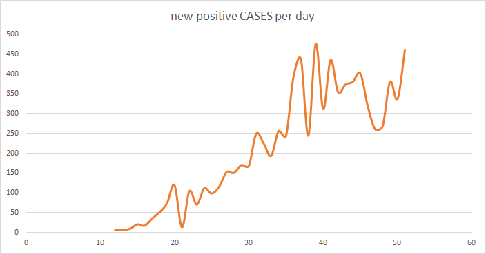
A: But when you look deeper (closer), then you can see instability of virus spread.
This is rather lack of proper data (some groups of ill people looks to be not tested),
than lack of stability in virus spread (as nature is rather stable).
But going little more far, we can conclude, that trend is
linear and in upward direction with some instabilities.
A: Also between day 35 and 52 maximums and minimums looks to be constant,
so since next days it should be another linear trend:
little more constant than upward, which is good, but we will see in reality.
VELOCITY
Note: Velocity is defined here as speed of virus spread basing on new positive cases of newly tested.
Q: How fast is virus spreading
Q: Can we see any points when this speed changes?
Daily change of positive cases rated to daily change of tested cases, so kind of velocity -- blue line
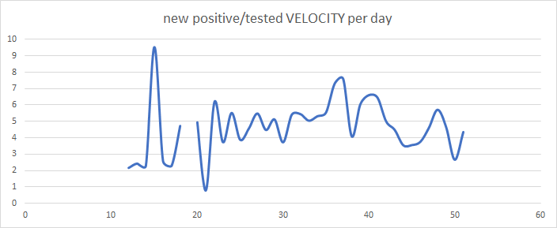
A: Virus spread was looking to be uncontrolled on the beginning, but now it looks more under control and slowing...
A: Yes, we can see too much such special points of speed change. But most special are:
-- day 14 -- maximum point, it was the day when infections were going up too fast
-- day 21 -- minimum point, it was the day when infections were looking to be mostly controlled (under control)
-- days 37 and 41 -- new upper mounts after more-or-less constant optimums, sth bad happened
-- day 50 -- trend is going down, and this day influenced it in good manner (downward direction of speed)
Q: How fast recovery occurs, it if occurs, and how it relates to detection of new cases?
Q: How fast dead occurs and is detection of new cases influenced by dead cases already met?
Speed of spread of new recovered (blue line) and new dead cases (orange line) compared to all new positive cases (grey line)
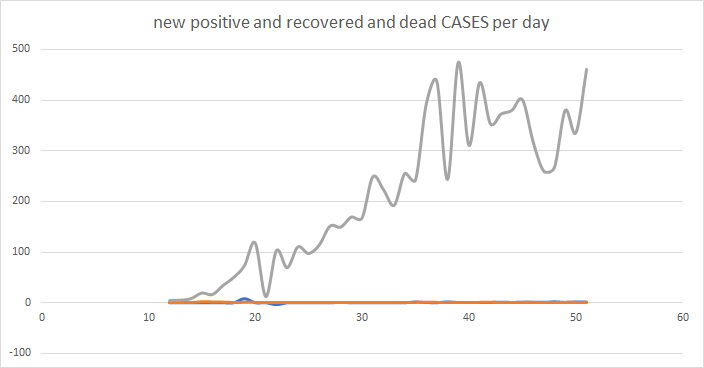
A: A distance between new results of therapy of ill (infected, resulting as recovered or dead) and new infected is increasing quickly.
It would be good to have even bigger distance to new dead cases, but at the same time to have much lower distance to new recovered cases.
Again, we can be aware of the time gap, big delay between knowing results of cure/therapy and new infections occuring.
A: Function started to stabilize after uncontrolled growth around day 43 and gone much down (good) around day 48.
But unfortunately this kind of velocity is again increasing recently. I hope it will go down soon...
Q: How fast recovery occurs comparing to dead cases?
Closer look at recoveries and dead cases on daily basis -- how much it spread, so velocities of recovery (blue line) and dead (orange line)
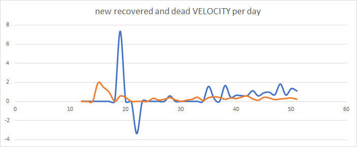
A: On the beginning dead rate was higher than recovery rate, but then it gone together (more-or-less),
while now fortunately recoveries increase faster than dead.
ACCELERATION
Note: Acceleration is defined here as tempo of increasing/decreasing speed of virus spread.
It is harder to be interpreted, but we can see bigger jumps around day 20, and lower before day 40.
So it looks something has changed during mentioned days.
Previous diagrams have shown what has changed, and this diagram put light on how much it has changed.
Tempos of changes (acceleration) of new daily recoveries (grey line) and new dead cases (yellow line)
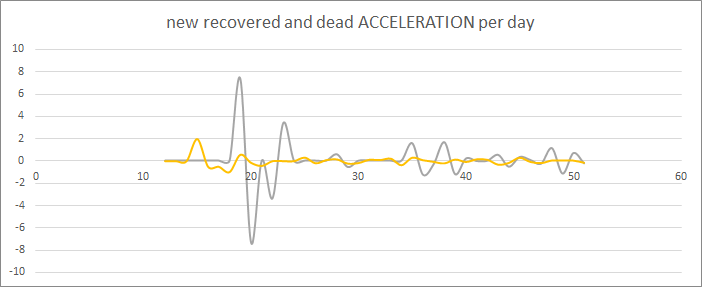
Cumulative and Daily Statistics together
Note: Final diagram showing two kinds of speed: based on cumulative data (rates, going upward) and based on new cases (more steady).
Velocities of: recovered cases (blue and grey lines) VS dead (orange and yellow lines),
Velocities of: only new cases data (blue and orange lines) VS cumulative data (grey and yellow lines)
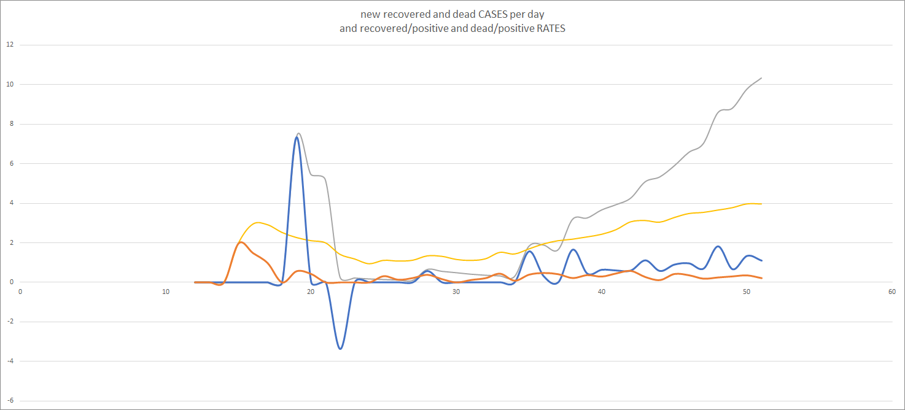
This combination of four diagrams shows which diagram exactly can be interesting for us, so we can go up and check it deeper.
(C) 2020.04.20 by Grzegorz Adam Stadnik